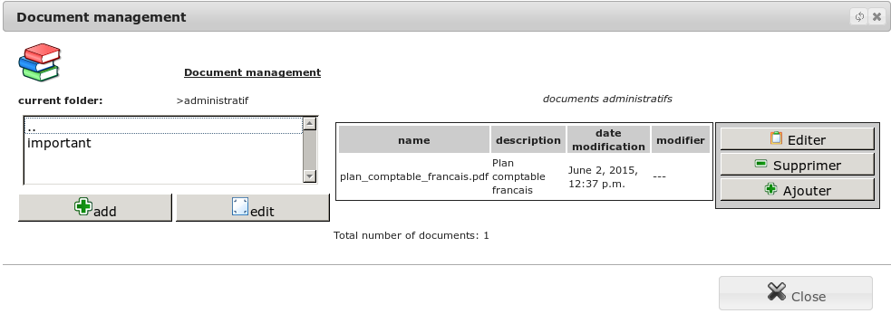

Shared documents¶
List of documents¶
The menu Office/Document management/Documents allows you to view the list of files you have already registered. To help you find your documents, the list is classified by a set of folders and subfolders and description gives you a quick summary.
You also can add a subfolder or change the properties of the current folder.

Depending on your permissions, you can retrieve your consultation file, modify it and possibly re-inject your corrections.
In addition, the tool will store the user and the creation date of the document and the information about the last change.

Document search¶
The menu Office/Document management/Document search allows you to define a search criteria on a document.
Once validated, the tool will search the database all relevant files to these criteria.